5/6/22 - Marshall Peak and Summerhaven via Hirabyashi CG
The stretch of the Arizona Trail from Hirabayashi campground to Mt Lemmon is probably the best hiking trail ive experienced in Arizona, and one of my favorite hikes despite the proximity to a big city, Tucson. After starting out from the campground I didn’t pass a single person until a few miles before Mt Lemmon, near Lemmon Creek. It was a hot May day and I got thirsty right after starting. It got to the point where I didn’t drink water as I wanted to ration and wasn’t sure how many water sources there were. The thought of water drove me crazy and I found myself extremely thirsty. After about 8 miles and nearly stepping on a Gila Monster, I got to Hutch’s Pools and found a somewhat stagnant pool of brown water flowing from up mountain. I busted out the water filter and drank about a liter. Despite the swamp water taste it was refreshing. I camped a half mile or so past there and woke up with the sun next morning around 5:30am, heated up my swamp water and made coffee. It was going to be a full day of hiking, gaining about 4000 ft of elevation gain to Mt Lemmon where Dad was going to meet me. The hike quickly climbed out of the canyon to the top of a ridge overlooking Oro Valley. The forest and cactus gave way to green fern and ponderosa pine. I kept gaining elevation and made it to the Wilderness of Rocks where I almost stepped on a rattlesnake and was hounded every second by flies. A while later I made it to Lemmon Creek, the first source of water since Hutch’s Pools. This water was different. It was flowing fast and among plants, and much clearer. I filtered and drank probably about two liters, it was that good. The last few miles followed along the creek and boulders that were lined with trees and ponderosa. The air temperature was cool and felt great combined with the dry air. I made it to the town, Summerhaven, and went to the general store where I bought a Gatorade and drank it sitting outside the store waiting for Dad. All in all, a fantastic hike.
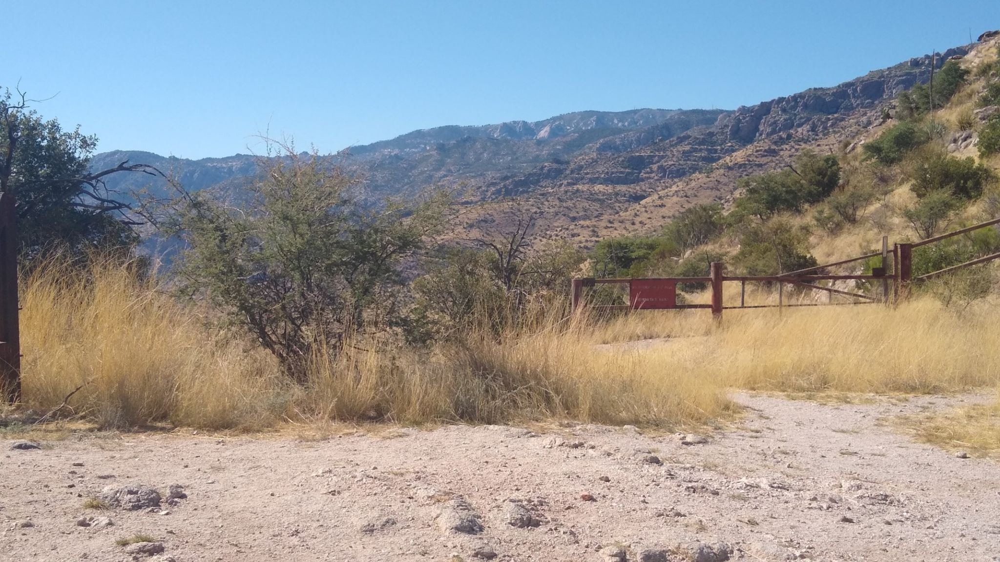
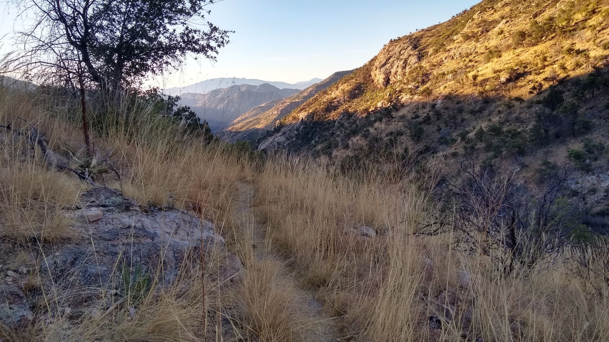
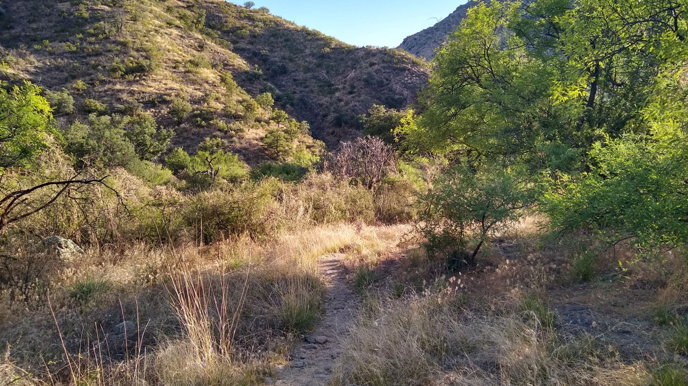
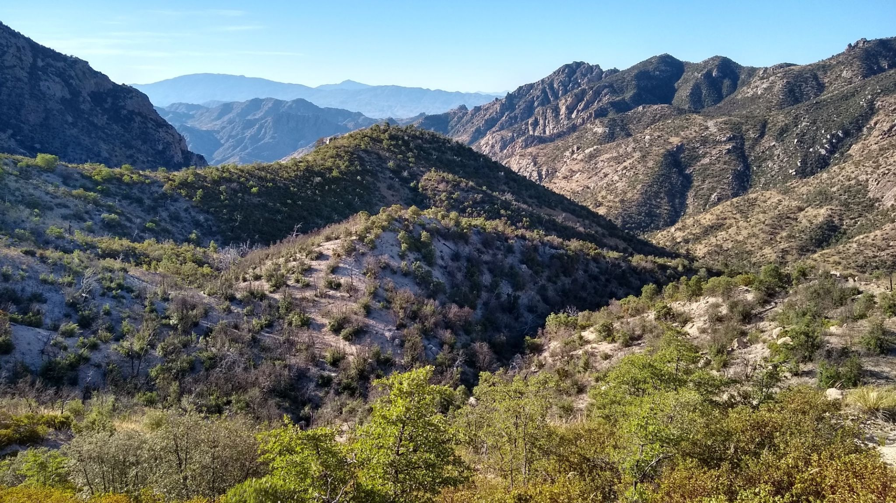
A gila monster, about a foot long
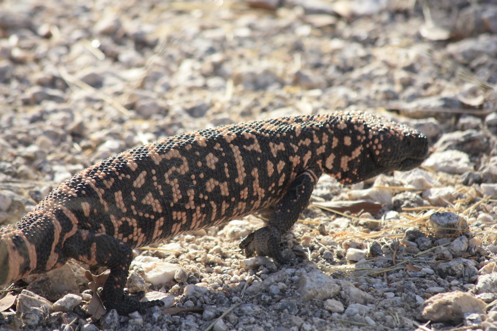
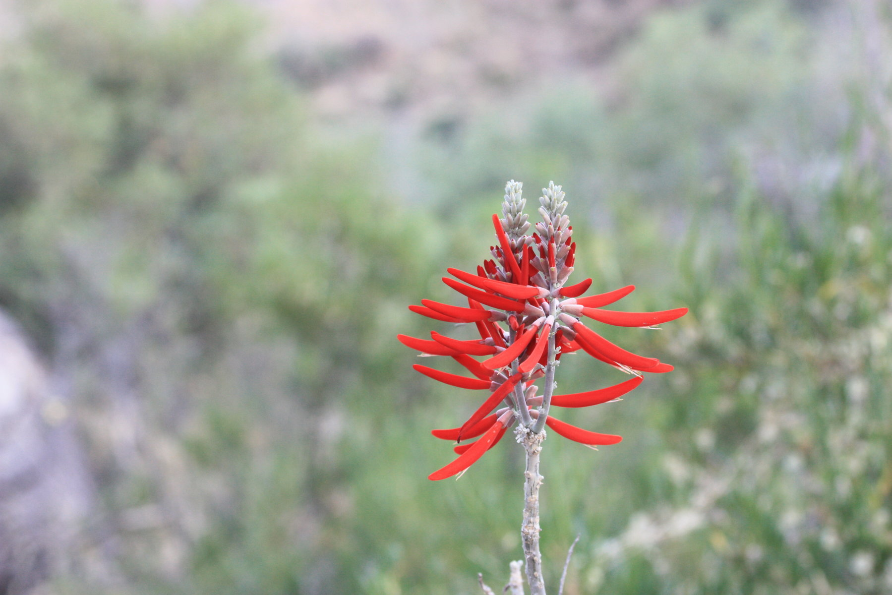
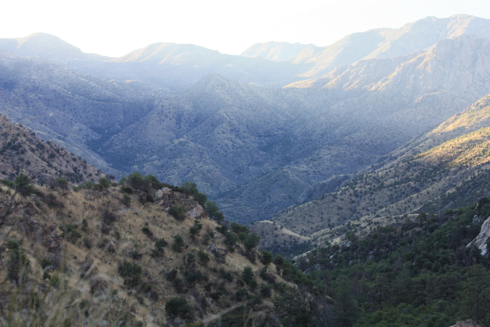
A view of Oro Valley over the Pusch front range after exiting the canyon and hiking up a steep ridge.
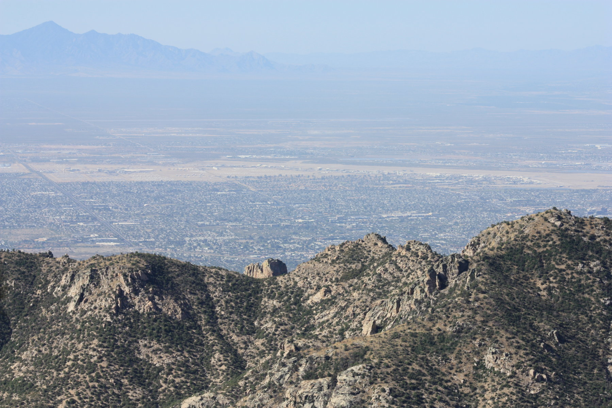
Wilderness of rocks
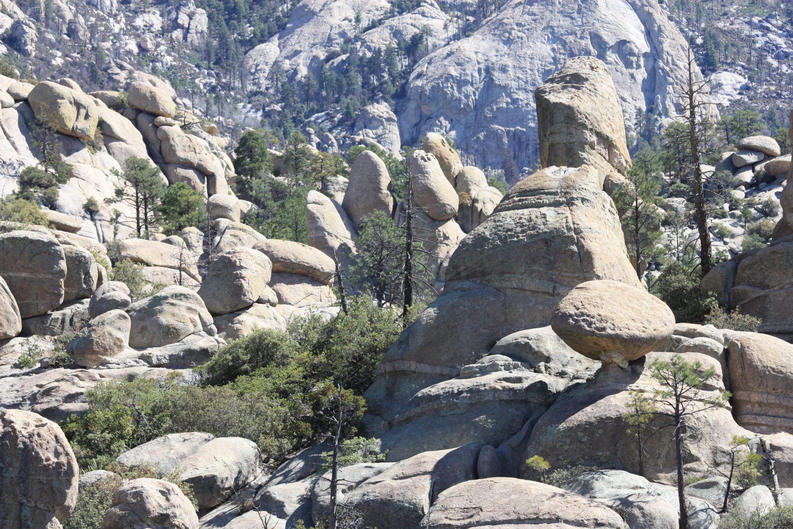
A rattlesnake i nearly stepped on.
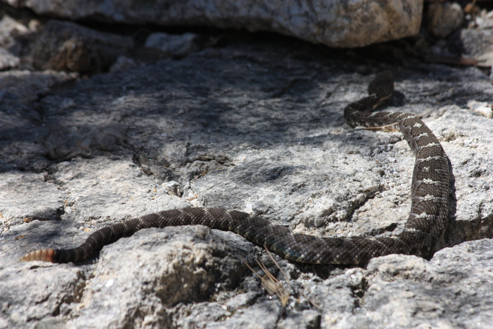
A cactus seemingly growing straight out of the rock.
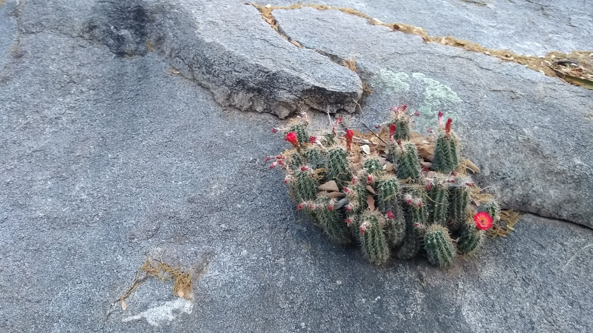
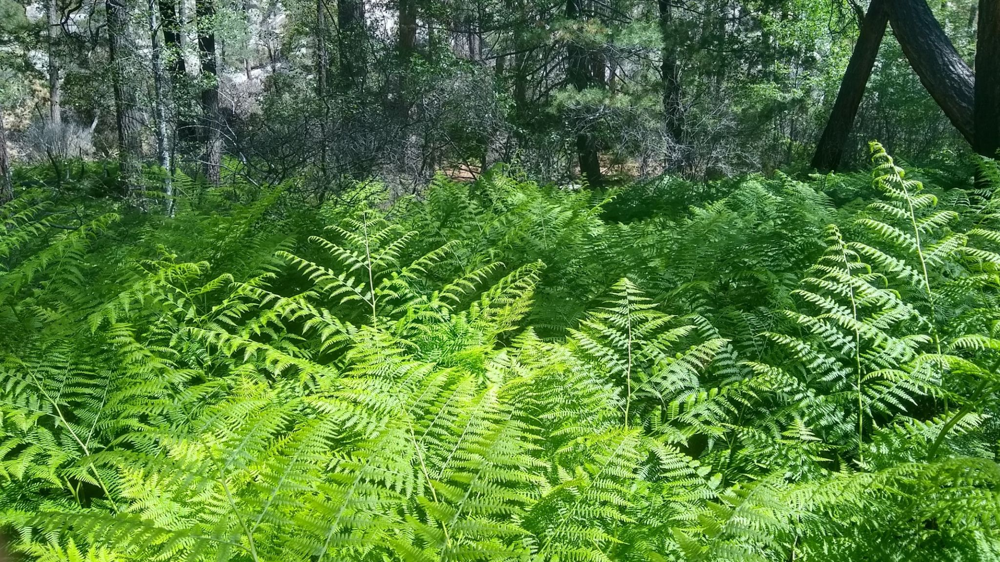
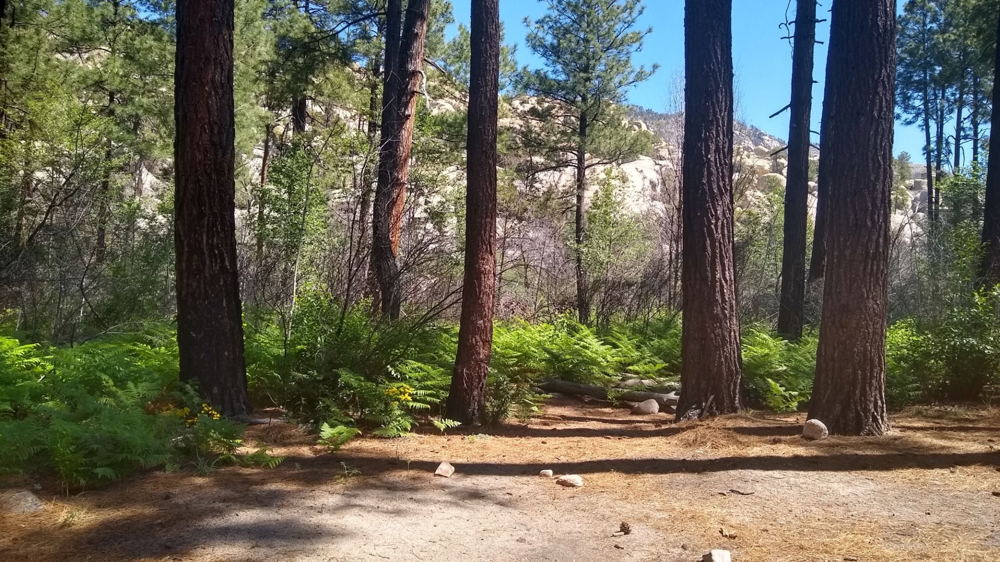
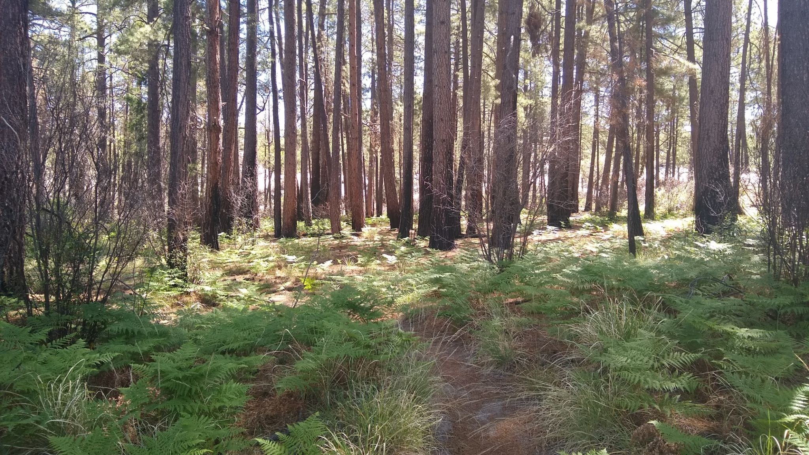
Ferns overlooking Marshall Gulch, near the town of Summerhaven
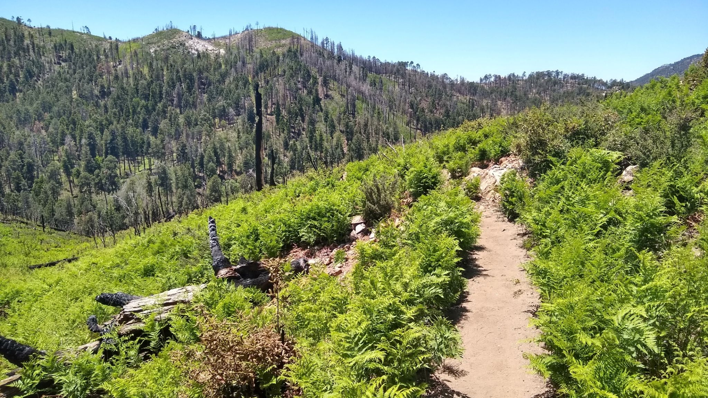